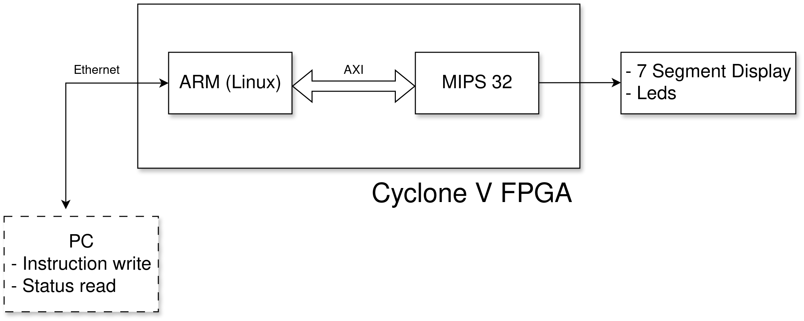
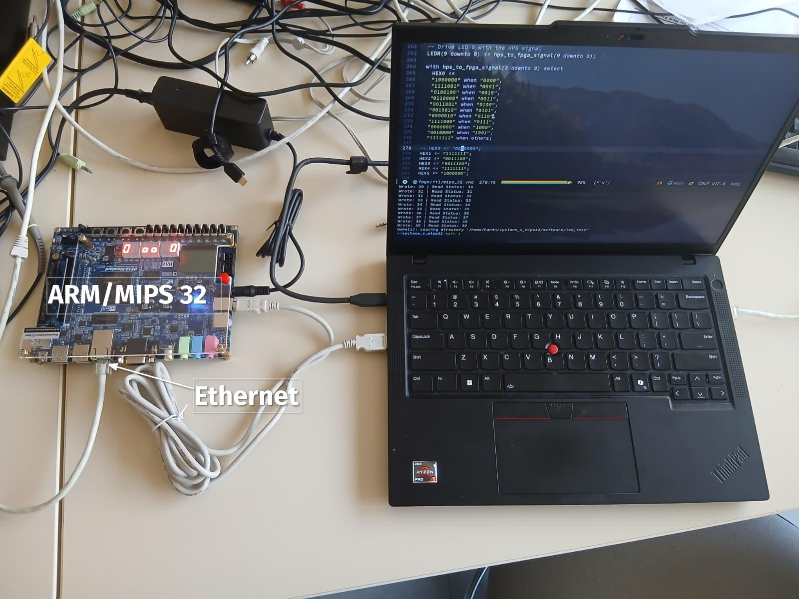
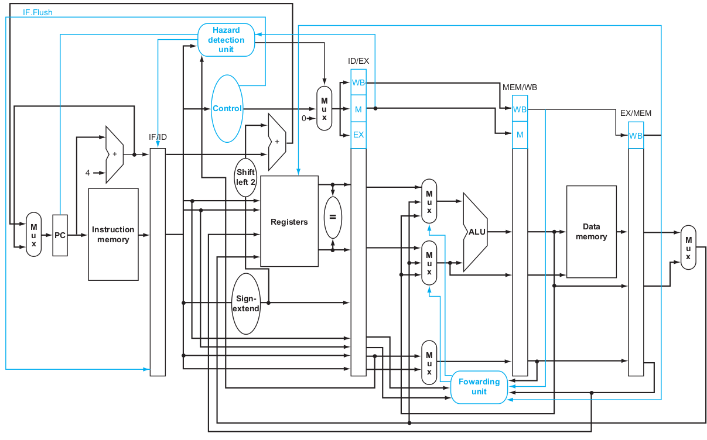

MIPS
32 Processor
A Cyclone V Implementation
Hanan Quispe
March 27, 2026
Motivation
Why
MIPS32
R2000
?
Academic Foundation:
Implementing a “Classic 9” instruction subset (R, I, and J-types) to master the standard of
RISC
HW
/
SW
interfacing.
Strategic Engineering:
Utilizing a minimalist
ISA
to focus 100% on solving complex pipeline hazards (Data, Control, and Structural).
Bridge to Modern Cores:
Applying these
R2000
fundamentals to better understand high-performance architectures like the
RISC
-V
CVA6
.
Full-Stack Mastery:
Progressing from high-level architectural modeling to physical
RTL
synthesis on the Intel Cyclone V
FPGA
.
State of the Art
Comparative Context
Historical Baseline:
MIPS
R2000
(1985) established the fundamental 5-stage pipeline architecture used in modern
RISC
cores.
Architectural Contrast:
Implementing Branch Delay Slots—a unique
MIPS
design choice that contrasts with the
CVA6
RISC
-V architecture.
Encoding Efficiency:
A fixed 32-bit instruction length (R, I, and J-types) allows for deterministic, single-cycle hardware decoding.
Modern Relevance:
Studying these legacy features provides the critical context needed to optimize modern out-of-order execution systems.
Experimental Setup
Block Diagram

Setup

MIPS
32 (
R2000
)
Architectural Blueprint
Datapath:
5-stage pipeline (
IF
,
ID
,
EX
,
MEM
,
WB
).
Instructions
: lw, sw, add, sub,
AND
,
OR
, slt, beq, and j
Components:
ALU
:
32-bit arithmetic, logic, and shift operations.
Register File:
32x32-bit (Dual-read, single-write).
Control Unit:
Hardwired logic (
VHDL
) for opcode decoding.
Memory Interface:
Interfacing with Cyclone V
M10K
blocks for instruction and data storage.
Block Diagram (Hennessy & Patterson)

Roadmap
Phase 1: Specification & Component Design (Current)
ALU
and Register File design in
VHDL
.
Unit testing with ModelSim testbenches.
Phase 2: Datapath Integration
Wiring the
IF
/
ID
/
EX
stages.
Implementation of the Instruction Decoder logic.
Phase 3: Memory &
FPGA
Implementation
Mapping the memory to Intel Cyclone V resources using Quartus.
Handling synchronous
RAM
timing.
Phase 4: Validation
Running basic Assembly programs (Fibonacci, Sort) to verify
ISA
compliance.
Theoretical Questions
Critical Design Challenges
Hazard Management:
Handling
RAW
hazards (lw-use) via stalling or forwarding.
Structural Integrity:
Why a Harvard Architecture is required for a 1-
CPI
(Cycles Per Instruction) goal.
ISA
Implementation:
Managing the Branch Delay Slot in the
IF
/
ID
stages.
VHDL
Concurrency:
How the Control Unit generates signals for the Datapath in a single clock cycle.
Thank You!
hanan.quispe-condori@polytechnique.edu